Footnotes
Introduction to LaTeX’s main footnote commands
According to Wikipedia, footnotes were invented by an English printer called Richard Jugge (c.1514–1577). This time-honoured literary device is supported by LaTeX and in this help article we explain the main footnote-related commands and provide a range of examples to demonstrate their use.
The \footnote command
The \footnote command is the core LaTeX command for creating footnotes and takes two forms:
\footnote{text for footnote}: This inserts an (automatically-generated) superscript number, called the footnote marker, into the document text and also creates the corresponding footnote at the bottom of the page, containing the corresponding footnote marker andtext for footnote.\footnote[number]{text for footnote}: This form of the command uses the optional valuenumberto create the superscript footnote marker; it also inserts the corresponding footnote at the bottom of the page, containing the identifying footnote marker (number) andtext for footnote.
Example: using the \footnote command
Here is an example which demonstrates the two variants of \footnote:
\footnote{Automatically generated footnote markers work fine!}automatically typesets the numeric (superscript) value (1) for the footnote marker, whereas\footnote[42]{...is that the answer to everything?}uses 42 as the value of the footnote marker and, as you may observe, it does not increment the integer used for auto-creation of markers: the third footnote has a marker value of 2.
I'm writing to demonstrate use of automatically-generated footnote markers\footnote{Automatically generated footnote markers work fine!} and footnotes which use a marker value provided to the command\footnote[42]{...is that the answer to everything?}.
Now, I will use another automatically-generated footnote marker\footnote{Now, footnote markers are 1, 42, but then back to 2? That will be confusing if the automatically-generated number also reaches 42!}.
This example produces the following output:
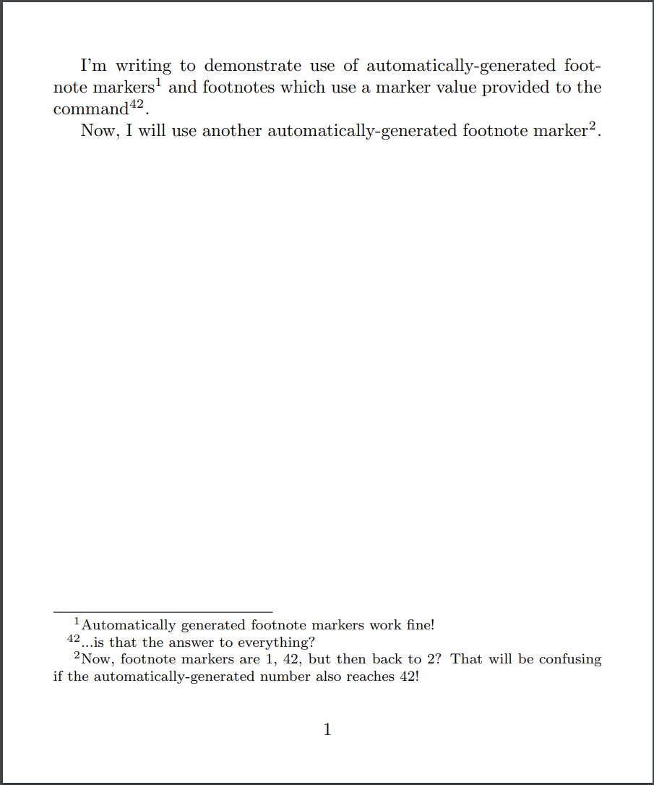
Storing the current footnote marker value: LaTeX counters
LaTeX uses so-called counter variables to store the current value of footnote markers. In practice, LaTeX provides and uses two counter variables according to where the footnote is being used:
footnote: the counter variable for footnotes within the main document textmpfootnote: the counter variable for footnotes within aminipageenvironment
Each time the \footnote{text} version of that command is used, the corresponding counter variable is incremented by 1. With the \footnote[number]{text} version, the corresponding counter variable is not incremented.
You can create additional counter variables and use them for producing footnotes, as demonstrated in the example below.
The \footnotemark and \footnotetext commands
In addition to \footnote, LaTeX provides the commands:
\footnotemarkwhich typesets the footnote marker, and\footnotetextwhich typesets the footnote text
Both commands take an optional argument enclosed in square brackets ([...]):
\footnotemark[number]: typesets a footnote marker at the point the command is used but does not create/typeset a corresponding footnote at the bottom of the page.[number]is the optional argument, specifying that the valuenumbershould be used for the footnote marker.- If you use this command without the optional argument, writing it as
\footnotemark, this form of the command generates the footnote marker using an internal LaTeX variable called a counter variable—which is incremented by 1 when the optionalnumbervalue is not provided.
\footnotetext[number]{text for footnote}: typesets the footnote text (text for footnote) corresponding to the marker produced by the previous\footnotemark.[number]is the optional argument which specifies the corresponding footnote marker for thetext for footnote.- If you use this command without the optional
numberargument, i.e. writing it as\footnotetext{text for footnote}, this form of the command generates a footnote whose marker corresponds to the most recent\footnotemark.
Example: using \footnotemark and \footnotetext
The \footnotemark and \footnotetext commands are often used together to construct footnotes in tables, or other locations, where the standard \footnote command does not work, or is not the best/optimal solution—some applications are demonstrated in this article (see here and here).
I'm writing to test the \verb|\footnotemark| and \verb|\footnotetext| commands.
You can insert a footnote marker using the \verb|\footnotemark|\footnotemark{}
command and later, when you're ready, typeset the footnote text by writing
\verb|\footnotetext{Here's the footnote.}|. \footnotetext{Here's the footnote.}
Let's do one more to see the result\footnotemark{} which I'll comment on within the
footnote\footnotetext{Specifically, I'd write comments in this one.}.
This example produces the following output:
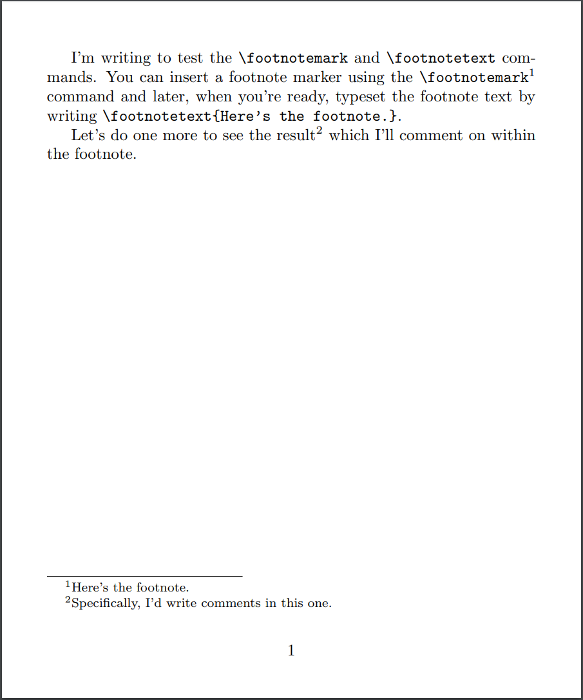
Other LaTeX footnote commands
In addition to the commands we have explored:
\footnote[number]{text for footnote}\footnotemark[number]\footnotetext[number]{text for footnote}
LaTeX provides several additional footnote-related commands that we’ll list but not explore in any detail. The following descriptions are taken from the LaTeX2e source code documentation:
\footnotesize: Size-changing command for footnotes.\footins: Space between main text and footnotes. The rule separating footnotes from text occurs in this space. This space lies above the strut of height\footnotesepwhich is at the beginning of the first footnote.\footnoterule: Macro to draw the rule separating footnotes from text. It is executed right after a\vspaceof\skip\footins. It should take zero vertical space—i.e., it should to a negative skip to compensate for any positive space it occupies.\footnotesep: The height of a strut placed at the beginning of every footnote.
Examples and applications of footnotes
Footnotes with multiple references
The following example demonstrates one way to make multiple references to the same footnote. By using \footnotemark[\value{footnote}] you can insert a superscript corresponding to the current value of the footnote counter but without incrementing the footnote counter value (for more information on counters, see this Overleaf help article).
I'm writing to test\footnote{Footnotes work fine!} several footnote features.
You can insert the footnote marker\footnotemark{} using the \verb|\footnotemark|
command and later use the \verb|\footnotetext| command to typeset the footnote
text by writing \verb|\footnotetext{Text of second footnote.}|
\footnotetext{Text of second footnote.}.
I can use the same footnote\footnotemark{} more than
once\footnotemark[\value{footnote}].
\footnotetext{A footnote with two references.}
This example produces the following output:
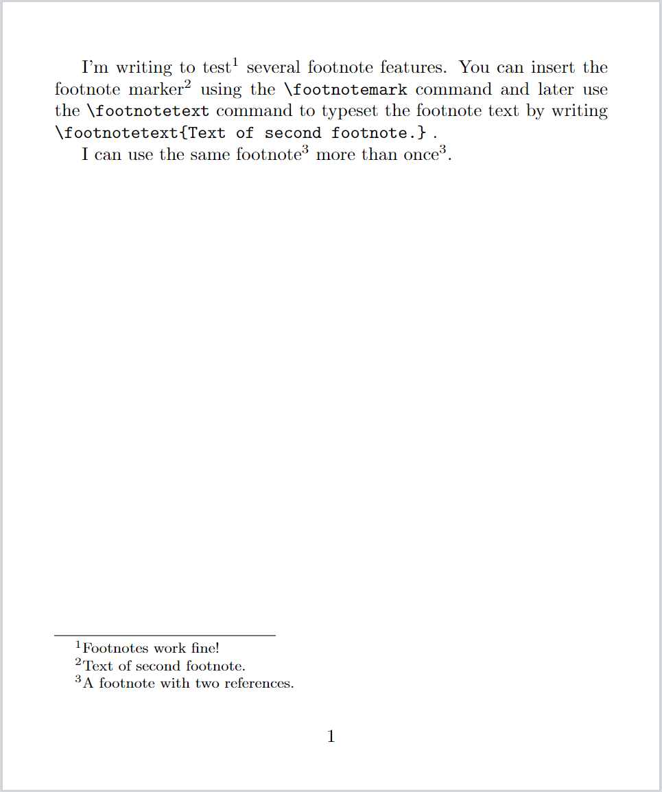
Changing the numbering style
The current value of the footnote number is stored in a LaTeX variable called the footnote counter and can be typeset by the command \thefootnote. You can change the typeset format of footnote markers by modifying the \thefootnote command; for example, \renewcommand{\thefootnote}{\roman{footnote}} will typeset markers in lowercase Roman numerals. You can use \renewcommand{\thefootnote}{...} in the preamble to change the numbering style of footnotes in the main document text.
Other possible marker styles are:
\arabic{counter variable}: typesetcounter variablein Arabic numerals.\Roman{counter variable}: typesetcounter variablein uppercase Roman numerals.\alph{counter variable}: typesetcounter variablein lowercase Alphabetic characters.\Alph{counter variable}: typesetcounter variablein uppercase Alphabetic characters.\fnsymbol{counter variable}: typesetcounter variableusing a set of 9 special symbols.
For background information on creating, using and modifying counters see this Overleaf article on counters.
Here is an example using \renewcommand{\thefootnote}{\roman{footnote}}:
I'm writing to test\footnote{Footnotes work fine!} several footnote features.
You can insert the footnote marker\footnotemark{} using the \verb|\footnotemark|
command and later use the \verb|\footnotetext| command to typeset the footnote
text by writing \verb|\footnotetext{Text of second footnote.}|
\footnotetext{Text of second footnote.}.
I can use the same footnote\footnotemark{} more than
once\footnotemark[\value{footnote}].
\footnotetext{A footnote with two references.}
\renewcommand{\thefootnote}{\roman{footnote}}
Now a footnote marker using lowercase Roman numerals\footnote{This footnote marker uses lowercase Roman numerals.}.
This example produces the following output:
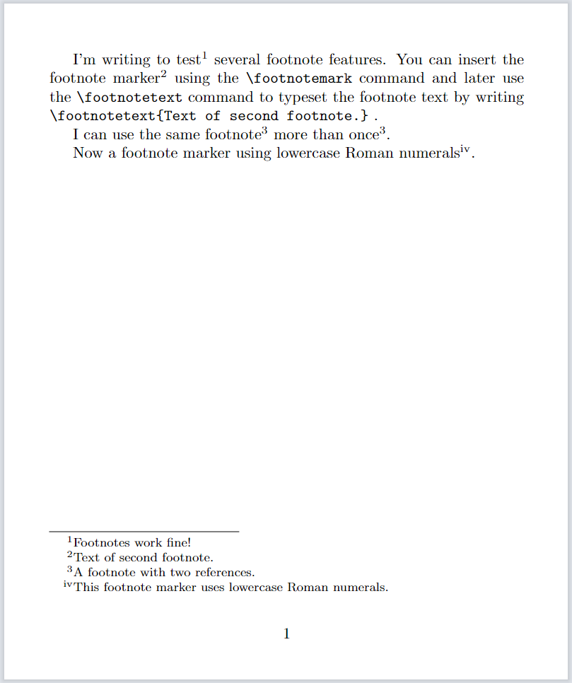
Footnotes in minipage environments
Footnotes within a minipage environment behave differently because the commands \footnote and \footnotetext are temporarily redefined so that footnotes are:
- placed at the bottom of the
minipage, not the main document page - labled/numbered using a scheme different to in-text footnotes—in a
minipagethe footnotes use a counter calledmpfootnote
Here's an example of footnotes in a minipage:
This is the start of a paragraph of text just before we switch to a \texttt{minipage} environment. This is an in-page footnote\footnote{Footnote before a minipage}.
\vspace{10pt}
\begin{minipage}{0.7\textwidth}
This is text in a \texttt{minipage} environment. Here is the first \texttt{minipage} footnote\footnote{First minipage footnote.}. And another \texttt{minipage} footnote\footnote{Second minipage footnote.}.
\end{minipage}
\vspace{10pt}
This is the start of a standard paragraph of text just after we finished a \texttt{minipage} environment. This is an in-page footnote\footnote{Footnote after a minipage}.
This example produces the following output:
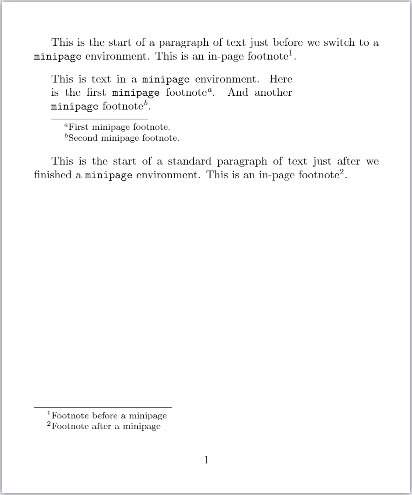
Changing minipage footnote markers
As shown by the example above, within a minipage footnote markers are lowercase letters; however, the \renewcommand can be used to redefine how the mpfootnote counter value is typeset. For example, to typeset minipage footnote markers as Arabic digits:
\renewcommand{\thempfootnote}{\arabic{mpfootnote}}
as show in the following example:
\renewcommand{\thempfootnote}{\arabic{mpfootnote}}
\begin{minipage}{0.7\textwidth}
This is text in a \texttt{minipage} environment. Here is the first \texttt{minipage} footnote\footnote{First minipage footnote.}. And another \texttt{minipage} footnote\footnote{Second minipage footnote.}.
\end{minipage}
This example produces the following output:
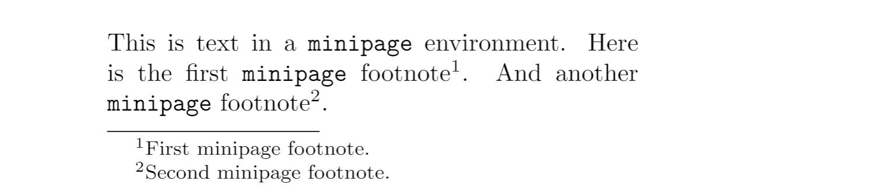
Footnotes in tables
The following sections examine a number of topics related to using footnotes in tables.
Should you use footnotes in tables?
The Frequently Asked Question List for TeX has an entry for footnotes in tables which comments that using footnotes in tables is not considered to be typographic best practice: ideally, table notes should be used instead of table footnotes. The use of table notes or table footnotes may be defined by document class/style files you are required to use, or the choice may be yours: either way, LaTeX provides a range of solutions you can use.
Example: \footnote does not work in the tabular environment
The \footnote command does not work inside a tabular environment, as the following example demonstrates. Note this example uses the hologo LaTeX package to typeset the names of various TeX engines.
\begin{table}
\centering
\begin{tabular}{lcc}
\midrule
\TeX{} engine & Native UTF-8 support & Unicode math support\\
\midrule
\hologo{pdfTeX} & No\footnote{Some UTF-8 support via \LaTeX{} kernel commands.} & No\\
\Hologo{XeTeX} & Yes & Yes\\
\Hologo{LuaTeX} & Yes & Yes\\
\midrule
\end{tabular}
\caption[\TeX{} engine features]{%
\TeX{} engine feature comparison\footnote{Draft version. Additional feature comparisons will be added.}.}
\end{table}
This example produces the following output, showing the presence of footnote marks in the table cell and caption, but there is no corresponding footnote text:
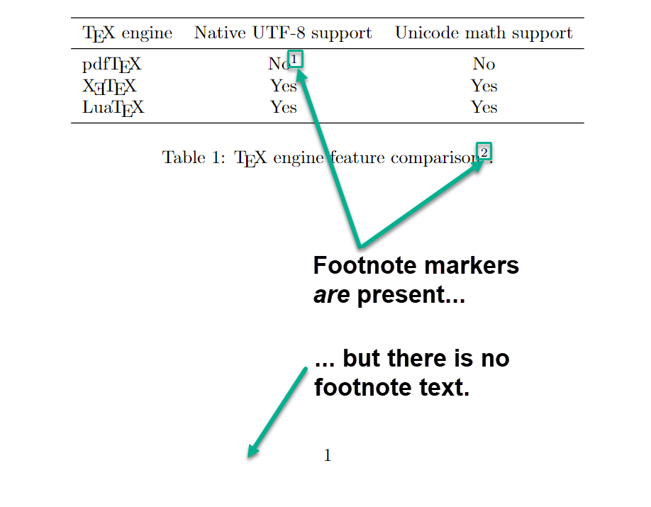
A partial solution is to place the tabular inside a minipage environment:
\begin{minipage}{\textwidth}
\centering
\begin{tabular}{lcc}
\midrule
\TeX{} engine & Native UTF-8 support & Unicode math support\\
\midrule
\hologo{pdfTeX} & No\footnote{Some UTF-8 support via \LaTeX{} kernel commands.} & No\\
\Hologo{XeTeX} & Yes & Yes\\
\Hologo{LuaTeX} & Yes & Yes\\
\midrule
\end{tabular}
\end{minipage}
This example produces the following output:
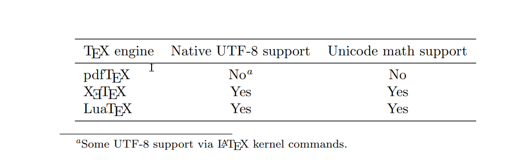
Note that you can also write \renewcommand{\thempfootnote}{\arabic{mpfootnote}} to have the minipage table footnote markers typeset as Arabic digits rather than lowercase letters.
Example from LaTeX2e unofficial reference manual
The LaTeX2e unofficial reference manual has an interesting example in the section Footnotes in a table. Normally, table footnotes within a minipage are placed at the bottom of the minipage, as the examples above have shown. The following example, from the LaTeX2e unofficial reference manual uses the \footnotemark and \footnotetext commands, together with a new counter (mpFootnoteValueSaver) to ensure the table footnotes appear at the bottom of the document page, to be included as part of the document’s standard footnotes.
When the table is typeset, the LaTeX code \setcounter{mpFootnoteValueSaver}{\value{footnote}} sets the value of mpFootnoteValueSaver to be the current footnote counter value; this ensures footnotes produced within the table use marker values that are synchronized with the main document footnote sequence (numbering). After the table is typeset, note how the mpFootnoteValueSaver is incremented by 1 through the code \stepcounter{mpFootnoteValueSaver}.
\newcounter{mpFootnoteValueSaver}
\begin{center}
\begin{minipage}{\textwidth}
\setcounter{mpFootnoteValueSaver}{\value{footnote}} \centering
\begin{tabular}{l|l}
\textsc{Woman} &\textsc{Relationship} \\ \hline
Mona &Attached\footnotemark \\
Diana Villiers &Eventual wife \\
Christine Hatherleigh Wood &Fiance\footnotemark
\end{tabular}
\end{minipage}% percent sign keeps footnote text close to minipage
\stepcounter{mpFootnoteValueSaver}%
\footnotetext[\value{mpFootnoteValueSaver}]{%
Little is known other than her death.}%
\stepcounter{mpFootnoteValueSaver}%
\footnotetext[\value{mpFootnoteValueSaver}]{%
Relationship is unresolved in XXI.}
\end{center}
This example produces the following output:
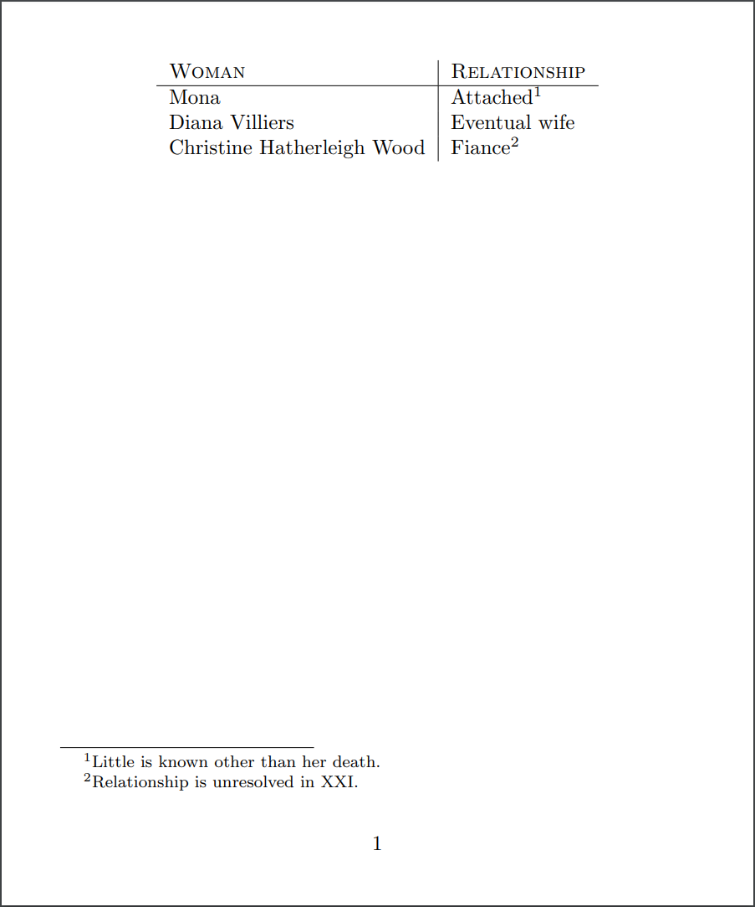
Example: table footnotes via the tablefootnote package
One option is the tablefootnote package which is mentioned on tex.stackexchange and referenced in the Frequently Asked Question List for TeX entry for footnotes in tables. The following example demonstrates the \tablefootnote package:
\documentclass{article}
% Using the geometry package with a small
% page size to create the article graphic
\usepackage[paperheight=6in,
paperwidth=5in,
top=10mm,
bottom=20mm,
left=10mm,
right=10mm]{geometry}
\usepackage{hologo} % for TeX engine logos
\usepackage{booktabs} % for nice tables
\usepackage{tablefootnote} % for table footnotes
\begin{document}
\begin{table}
\centering
\begin{tabular}{lcc}
\midrule
\TeX{} engine & Native UTF-8 support & Unicode math support\\
\midrule
\hologo{pdfTeX} & No\tablefootnote{Some UTF-8 support via \LaTeX{} kernel commands.} & No\\
\Hologo{XeTeX} & Yes & Yes\\
\Hologo{LuaTeX} & Yes & Yes\\
\midrule
\end{tabular}
\caption[\TeX{} engine features]{%
\TeX{} engine feature comparison\tablefootnote{Draft version. Additional feature comparisons will be added.}.}
\end{table}
\end{document}
Open this \tablefootnote package example in Overleaf
This example produces the following output:
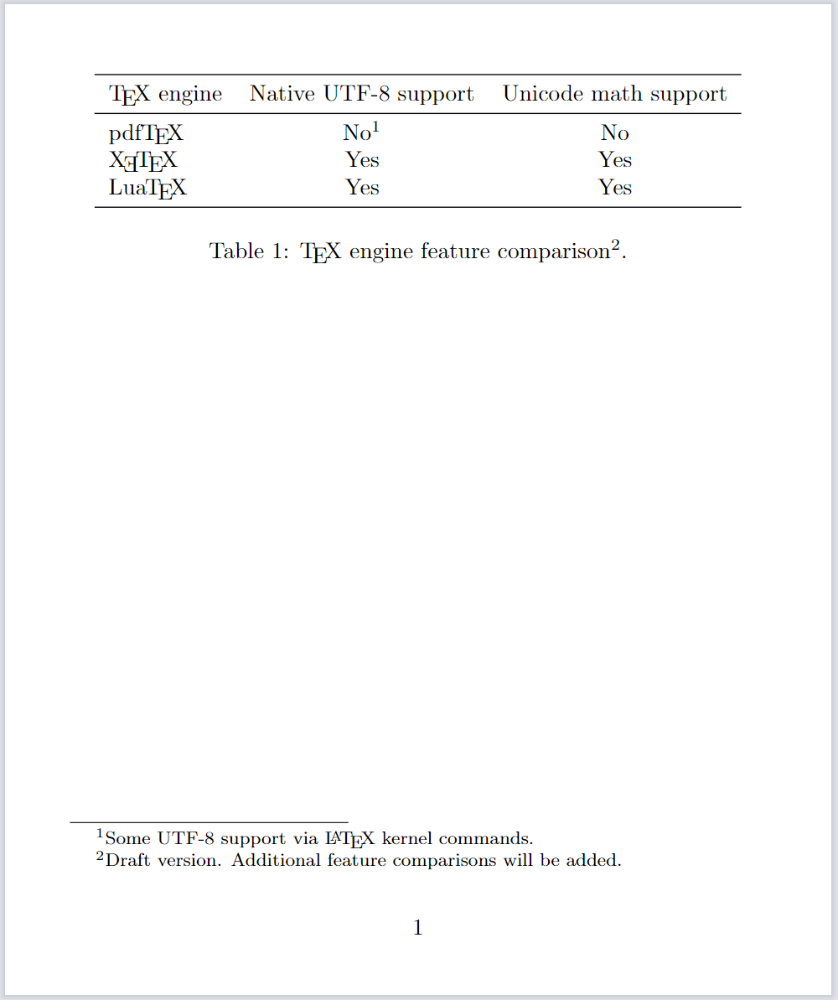
Table notes: an alternative to footnotes
The threeparttable package provides a mechanism to create table notes—an alternative to using footnotes in tables. The threeparttablex package implements a table notes facility for use with the longtable package.
Example: creating table notes using the threeparttablex package
The threeparttable package documentation is very brief, so we won't repeat it here but instead we'll provide an example of its use:
\begin{table}
\begin{threeparttable}[b]
\caption[\TeX{} engine features]{\TeX{} engine feature comparison\tnote{1}}
\centering
\begin{tabular}{lcc}
\midrule
\TeX{} engine & Native UTF-8 support & Unicode math support\\
\midrule
\hologo{pdfTeX} & No\tnote{2}& No\\
\Hologo{XeTeX} & Yes & Yes\\
\Hologo{LuaTeX} & Yes & Yes\\
\midrule
\end{tabular}
\begin{tablenotes}
\item [1] This is an early draft.
\item [2] Some UTF-8 support via \LaTeX{} kernel commands.
\end{tablenotes}
\end{threeparttable}
\end{table}
Open this threeparttable example in Overleaf
This example produces the following output
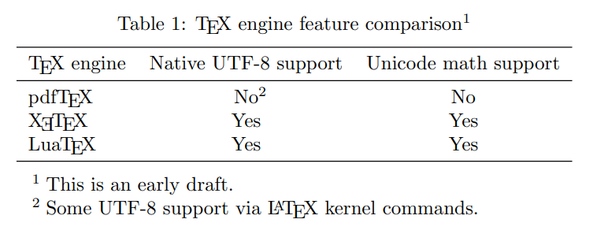
Discussions on tex.stackexchange
Table footnotes are also discussed on tex.stackexchange and various solutions outlined in threads, such as the following, which readers may be interested to explore:
Further reading
For more information see:
Overleaf guides
- Creating a document in Overleaf
- Uploading a project
- Copying a project
- Creating a project from a template
- Using the Overleaf project menu
- Including images in Overleaf
- Exporting your work from Overleaf
- Working offline in Overleaf
- Using Track Changes in Overleaf
- Using bibliographies in Overleaf
- Sharing your work with others
- Using the History feature
- Debugging Compilation timeout errors
- How-to guides
- Guide to Overleaf’s premium features
LaTeX Basics
- Creating your first LaTeX document
- Choosing a LaTeX Compiler
- Paragraphs and new lines
- Bold, italics and underlining
- Lists
- Errors
Mathematics
- Mathematical expressions
- Subscripts and superscripts
- Brackets and Parentheses
- Matrices
- Fractions and Binomials
- Aligning equations
- Operators
- Spacing in math mode
- Integrals, sums and limits
- Display style in math mode
- List of Greek letters and math symbols
- Mathematical fonts
- Using the Symbol Palette in Overleaf
Figures and tables
- Inserting Images
- Tables
- Positioning Images and Tables
- Lists of Tables and Figures
- Drawing Diagrams Directly in LaTeX
- TikZ package
References and Citations
- Bibliography management with bibtex
- Bibliography management with natbib
- Bibliography management with biblatex
- Bibtex bibliography styles
- Natbib bibliography styles
- Natbib citation styles
- Biblatex bibliography styles
- Biblatex citation styles
Languages
- Multilingual typesetting on Overleaf using polyglossia and fontspec
- Multilingual typesetting on Overleaf using babel and fontspec
- International language support
- Quotations and quotation marks
- Arabic
- Chinese
- French
- German
- Greek
- Italian
- Japanese
- Korean
- Portuguese
- Russian
- Spanish
Document structure
- Sections and chapters
- Table of contents
- Cross referencing sections, equations and floats
- Indices
- Glossaries
- Nomenclatures
- Management in a large project
- Multi-file LaTeX projects
- Hyperlinks
Formatting
- Lengths in LaTeX
- Headers and footers
- Page numbering
- Paragraph formatting
- Line breaks and blank spaces
- Text alignment
- Page size and margins
- Single sided and double sided documents
- Multiple columns
- Counters
- Code listing
- Code Highlighting with minted
- Using colours in LaTeX
- Footnotes
- Margin notes
Fonts
Presentations
Commands
Field specific
- Theorems and proofs
- Chemistry formulae
- Feynman diagrams
- Molecular orbital diagrams
- Chess notation
- Knitting patterns
- CircuiTikz package
- Pgfplots package
- Typesetting exams in LaTeX
- Knitr
- Attribute Value Matrices
Class files
- Understanding packages and class files
- List of packages and class files
- Writing your own package
- Writing your own class